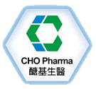

<div class="container">
    <div class="row">
        <div id="speaker-detail" class="col-lg-6 col-lg-offset-3">
            <div class="row">
                <button title="Close (Esc)" type="button" class="mfp-close">×</button>
                <div>
                    
                    <br />
                </div>
                <div class="col-md-8 col-lg-8">
                    <h2>CHO Pharma 醣基生醫</h2>
                    <p>CHO Pharma, located at Nangang Software Park in Taiwan, is a biopharmaceutical company mainly focused on the research, development and commercialization of innovative products based on its proprietary glycan engineering technologies that exclusively licensed from the strategic partner, Academia Sinica in Taiwan. We are committed to glycan scientific innovation to deliver best-in-class targeted and differentiated products. Our goal is to bring advanced, high-quality and affordable medicines、diagnostics and therapies to patients around the world.</p>
                    <p>Engineered antibodies are antibody based therapeutics, which are gaining increasing attention from various sizes of pharmaceutical company. By 2017, the overall market of monocolonal antibody is estimated to be USD 252 billion which has attracted enthusiasm in delivering the next generation of antibody based therapeutics. CHO Pharma possesses several core technologies including glycoproteins, glycan-based vaccine, glycan array and glyco-probes with more than 30 patents protection. We strive to address unmet medical needs and to deliver medical solutions valuable to patients, physicians and payers. The company has become one of leaders in glycan engineering technologies through an innovative product portfolio, and by working in partnership with the research as well as medical communities and other stakeholders. CHO Pharma employs more than 30 people in Taiwan.</p>
                    <p>CHO Pharma is a young, rapidly growing, and full-of-potential biopharmaceutical company. We are actively recruiting passionate talents across the globe to join us and build future success together. If you are looking for a world-class organization that relentlessly pursues excellence, we are definitely your best choice.</p>
                </div>
            </div>
        </div>
    </div>